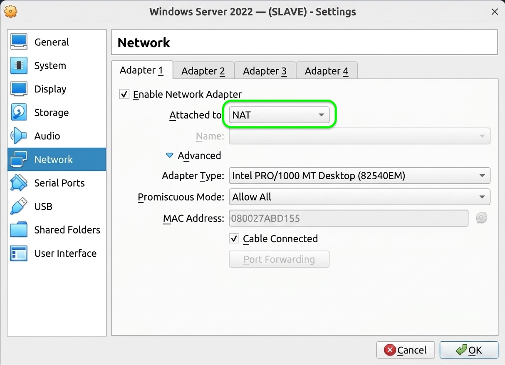
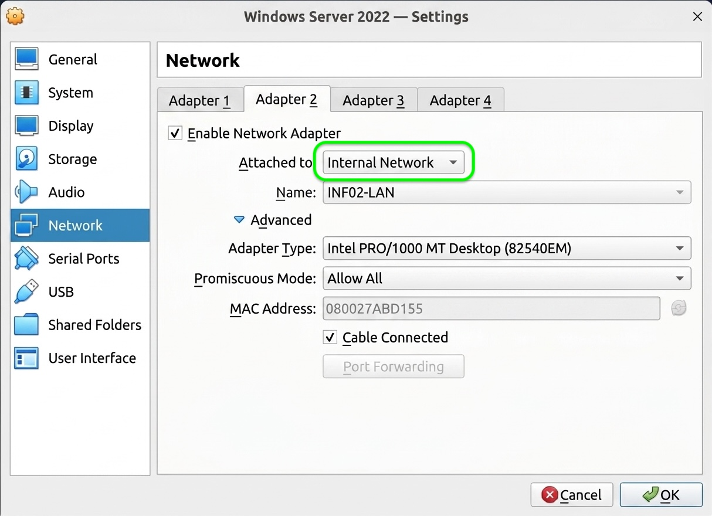

Praca domowa przed pierwszym labem: 3 maszyny w VirtualBox, jedna instrukcja, te same zasady. Łącznie ok. 3 godziny – rozłóż na 2 wieczory: Etapy 0–2, potem Etapy 3–5.
Musi być procesor x64. Jeśli widzisz ARM (np. laptopy ze Snapdragonem) – STOP, zgłoś to nauczycielowi. Na ARM nie uruchomisz tych systemów.
Sprawdź: Win+R ➔ msinfo32 ➔ wiersz
„Zabezpieczenia oparte na wirtualizacji”.
bcdedit /set hypervisorlaunchtype off
bcdedit /set hypervisorlaunchtype auto (i
restartem).
✅ Gotowe, gdy: procesor x64, ≥ 100 GB wolnego dysku, Wirtualizacja:
Włączone, msinfo32 pokazuje „Nie włączono”.
C:\INF02\ISO.
.iso, nie „Media Creation Tool” (.exe).
✅ Gotowe, gdy: VirtualBox jest zainstalowany, a w
C:\INF02\ISO leżą 3 pliki .iso.
| Parametr | 🪟 INF02-SERWER | 💻 INF02-KLIENT | 🐧 INF02-LINUX |
|---|---|---|---|
| ISO | Windows Server 2022 | Windows 11 Enterprise | Ubuntu Server 26.04 |
| Processors (CPU) | 2 | 2 | 2 |
| Base Memory – laptop 16 GB | 4096 MB | 4096 MB | 2048 MB |
| Base Memory – laptop 8 GB | 2048 MB | 4096 MB* | 1024 MB |
| Hard Disk (VDI, dynamiczny) | 50 GB | 64 GB | 25 GB |
| Karta 1 (Adapter 1) | NAT | NAT | NAT + przekierowanie portu 2222 ➔ 22 |
| Karta 2 (Adapter 2) | INF02-LAN | INF02-LAN | INF02-LAN |
| Karta 3 (Adapter 3) | INF02-LAN | – | – |
* Instalator Windows 11 wymaga 4 GB RAM. Na laptopie z 8 GB po instalacji zmniejsz RAM maszyny INF02-KLIENT do 3072 MB.
C:\INF02\VM
INF02-SERWER),
ISO Image: plik z C:\INF02\ISO. Type i Version VirtualBox ustawi sam
(dla Windows 11 sam włączy też EFI, Secure Boot i TPM 2.0).
vboxuser/changeme, a Windows
Server bez okienek (Core). Instalację robimy ręcznie, bo to umiejętność egzaminacyjna.

INF02-LAN. Rozwiń
Advanced ➔ Promiscuous Mode: Allow All.

Name: SSH, Protocol: TCP, Host IP: 127.0.0.1, Host
Port: 2222, Guest IP: (puste), Guest Port: 22.
INF02-LAN musi być identyczna co do
znaku na wszystkich maszynach (wielkie litery, myślnik). Inna nazwa = inny „switch” i
maszyny się nie zobaczą.
Ethernet (Windows) / enp0s3 (Linux), Karta 2 to
Ethernet 2 / enp0s8.
LAN12). Gdybyśmy skleili kartę NAT z kartą INF02-LAN, serwer straciłby
Internet. Zespół wymaga Promiscuous Mode: Allow All – ustawiamy go na każdej
karcie INF02-LAN (innym kartom nie szkodzi).
✅ Gotowe, gdy: w VirtualBox widzisz 3 wyłączone maszyny z nazwami z tabeli, a w Settings ➔ Network każdej z nich karty są ustawione jak w tabeli.
ZAQ!2wsx): INF02-SERWER –
Administrator, INF02-KLIENT – uczen, INF02-LINUX –
administrator.
English, Time and currency format: Polish,
Keyboard: Polish (Programmers) ➔ Next ➔ Install now.
Administrator: ZAQ!2wsx.Nazwy komputera nie zmieniaj – zrobimy to w Lab 1.
English, Time and currency format: Polish ➔
Next ➔ Keyboard: Polish (Programmers) ➔ Next.
Poland, klawiatura Polish (Programmers), drugą
klawiaturę pomiń (Skip). Jeśli pojawi się ekran z nazwą urządzenia – Skip.
uczen, hasło: ZAQ!2wsx, trzy pytania
bezpieczeństwa (odpowiedzi zapisz!). Ustawienia prywatności możesz wyłączyć.
Bez nich ekran jest malutki, a kopiuj-wklej nie działa. Zaloguj się, a następnie:
VBoxWindowsAdditions.exe ➔ Next, Next, Install ➔ Reboot now.
Instalator jest tekstowy i ma kilka pułapek – przejdź go według osobnego przewodnika, a potem wróć tutaj do Etapu 4:
🐧 Przewodnik: instalacja Ubuntu Server ➡️✅ Gotowe, gdy: logujesz się do wszystkich trzech systemów, a oba Windowsy dopasowują rozdzielczość do rozmiaru okna.
| Gdzie | Komenda | Oczekiwany wynik |
|---|---|---|
| Na każdej z 2 maszyn Windows (INF02-SERWER i INF02-KLIENT), w CMD | ipconfig |
Ethernet = 10.0.2.15. Pozostałe karty z adresem
169.254.x.x – prawidłowo, adres w INF02-LAN nadamy w Lab 1
|
ping 8.8.8.8 |
Odpowiedzi (Reply from…) – jest Internet | |
ssh |
Lista opcji usage: ssh [-46AaCfGg…] – klient SSH jest wbudowany | |
slmgr /dlv |
Okno z liczbą dni do końca wersji próbnej | |
| INF02-LINUX, w oknie maszyny | ip -br a |
enp0s3 = 10.0.2.15; enp0s8 = UP
bez adresu – prawidłowo, adres nadamy w Linux Lab 4
|
ping -c 3 ubuntu.com |
3 odpowiedzi – jest Internet i DNS | |
| Twój laptop, w CMD | ssh -p 2222 administrator@127.0.0.1 |
Pytanie o odcisk klucza ➔ wpisz yes ➔ hasło ➔ znak zachęty
administrator@serwer-linux:~$
|
✅ Gotowe, gdy: każdy wiersz tabeli daje oczekiwany wynik. Jeśli nie – sprawdź tabelę problemów niżej.
00-czysta-instalacja
Zrób to dla każdej z trzech maszyn.
✅ Gotowe, gdy: każda z 3 maszyn ma migawkę
00-czysta-instalacja.
| Objaw | Przyczyna | Naprawa |
|---|---|---|
VT-x is not available / AMD-V is disabled |
Wirtualizacja wyłączona w BIOS/UEFI albo zajęta przez Hyper-V | Etap 0, punkty 3 i 4 |
| Zielony żółw w pasku okna maszyny, wszystko bardzo wolne | VirtualBox działa „przez” Hyper-V | Etap 0, punkt 4 |
No bootable medium found |
Nie podpięto ISO | Settings ➔ Storage ➔ ikona płyty (Optical Drive) ➔ wybierz plik ISO |
| Windows 11: Press any key to boot from CD or DVD… minęło i nic się nie dzieje | Nie wciśnięto klawisza w ciągu kilku sekund | Machine ➔ Reset i od razu wciśnij dowolny klawisz |
| Windows 11: This PC can't run Windows 11 | Za mało RAM albo maszyna utworzona z innym typem systemu | Settings ➔ System: Base Memory 4096 MB, zaznaczone Enable EFI, Secure Boot, TPM v2.0 |
| Windows Server bez pulpitu, tylko czarne okno | Zainstalowana edycja Server Core | Pułapka nr 4 |
| Malutki ekran albo nie działa kopiuj-wklej | Brak Dodatków gościa albo wyłączony schowek | Dodatki gościa i schowek. Nadal źle: Settings ➔ Display ➔ Graphics Controller VBoxSVGA, Video Memory 128 MB |
Ubuntu: enp0s3 bez adresu |
Adapter 1 nie jest NAT albo odłączony kabel | Settings ➔ Network ➔ Adapter 1: NAT, Advanced ➔ Cable Connected zaznaczone |
ssh: Connection refused |
Na Ubuntu nie ma serwera SSH albo maszyna jest wyłączona | Na Ubuntu: sudo apt install openssh-server |
ssh: Connection timed out |
Brak reguły przekierowania portu albo zły port | Etap 2, punkt 4 (Port Forwarding) |
REMOTE HOST IDENTIFICATION HAS CHANGED |
Ubuntu zainstalowane od nowa ma nowy klucz | Na laptopie: ssh-keygen -R "[127.0.0.1]:2222" |
Adresy w sieci INF02-LAN (192.168.10.0/24) ustawiamy w labach – krok po kroku,
zgodnie z Mapą Architektury:
192.168.10.20 –
Linux Lab 4 (Netplan)
192.168.10.10 i 💻 INF02-KLIENT 192.168.10.30 –
Windows Lab 1 (Domena)